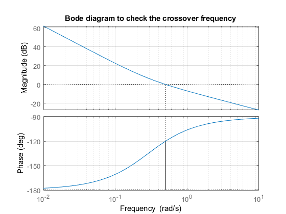
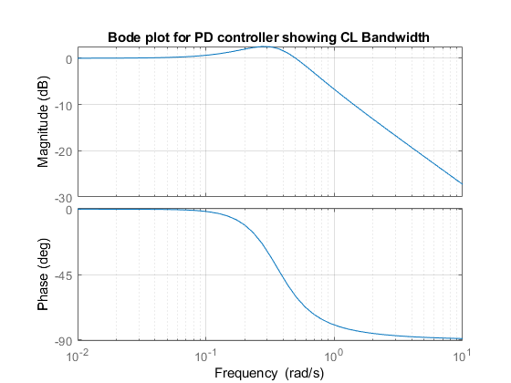
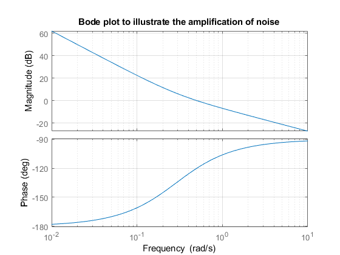
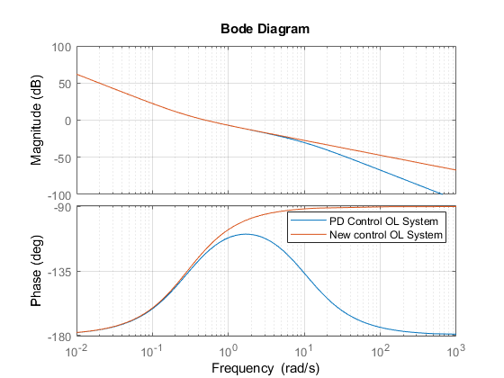
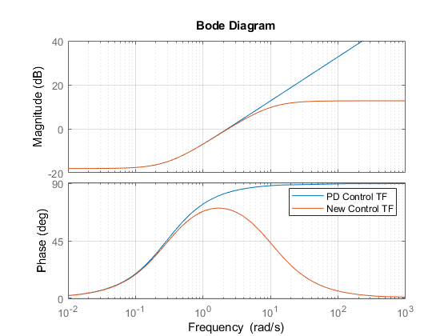
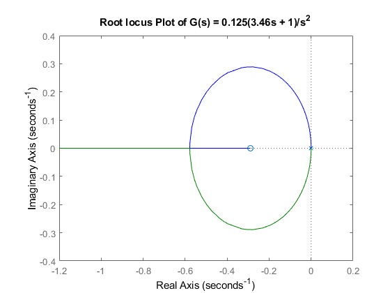
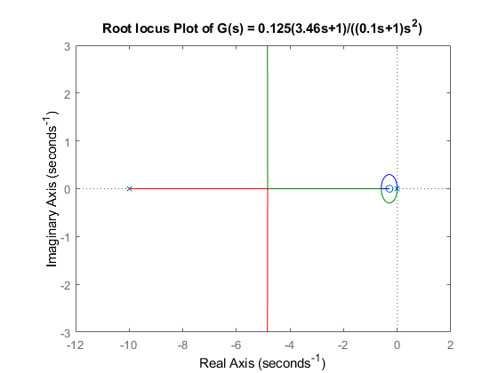
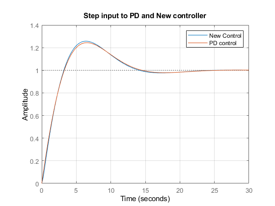
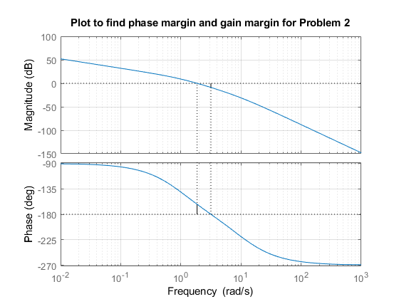

Contents
Problem 1B.
num = [0 0.125*3.46 0.125];
den = [1 0 0];
sys1 = tf(num, den);
figure
margin(sys1);
grid;
title('Bode diagram to check the crossover frequency');

Problem 1C
num = [0 0.125*3.46 0.125];
den = [1 0 0];
sys1 = tf(num, den);
sys2 = tf(1,1);
Gc1 = feedback(sys1, sys2);
figure
bode(Gc1);
grid;
title('Bode plot for PD controller showing CL Bandwidth');

Problem 1D
num = [0 0.125*3.46 0.125];
den = [1 0 0];
sys = tf(num, den);
figure
bode(sys);
grid
title('Bode plot to illustrate the amplification of noise')

Problem 1Eb
num = [0 0.125*3.46 0.125];
den = [1 0 0];
sys1 = tf(num, den);
Gp = (tf([0.125*3.46 0.125],[0.1 1]));
Gc = tf([0 0 1], [1 0 0]);
Gol = Gp * Gc;
figure
bode(Gol)
hold on
bode(sys1)
grid
hold off
legend({'PD Control OL System', 'New control OL System'},'Location', ...
'northeast')

Problem 1Ea
num = [0.125*3.46 0.125];
den = [0 1];
sys_cont_1 = tf(num, den);
num1 = [0.125*3.46 0.125];
den1 = [0.1 1];
sys_cont_2 = tf(num1, den1);
figure
bode(sys_cont_1)
hold on
bode(sys_cont_2)
hold off
grid
legend('PD Control TF', 'New Control TF')

Problem 1Fa
num = [0 0.125*3.46 0.125];
den = [1 0 0];
figure
rlocus(num,den);
title('Root locus Plot of G(s) = 0.125(3.46s + 1)/s^2');

Problem 1Fb
num = [0 0.125*3.46 0.125];
den = conv([0 0.1 1],[1 0 0]);
figure
rlocus(num, den);
title('Root locus Plot of G(s) = 0.125(3.46s+1)/((0.1s+1)s^2)')

Problem 1G
num1 = [0 0 0.4325 0.125];
den1 = [1 0.4325 0.125];
den2 = [0.1 1 0.4325 0.125];
figure
step(num1, den2);
hold on
step(num1, den1);
hold off
grid
title('Step input to PD and New controller')
legend('New Control', 'PD control');

Problem 2
num = 40;
den = conv([1 10 0],[1 1]);
sys = tf(num, den);
figure
margin(sys)
grid
title('Plot to find phase margin and gain margin for Problem 2')

Problem 2 step response
num = 166.67 * [1 1.54];
den = conv([1 10 0],conv([1 1],[1 6.42]));
sys = tf(num, den);
f_sys = feedback(sys, 1);
figure
step(f_sys)
grid
title('Step input to the compensated system');
Problem 2 ramp response
num = 166.67 * [0 0 0 0 1 1.54];
den = [1 17.42 80.62 230.87 256.6718 0];
sys = tf(num, den);
figure
step(sys)
grid
title('Ramp input to the compensated system');